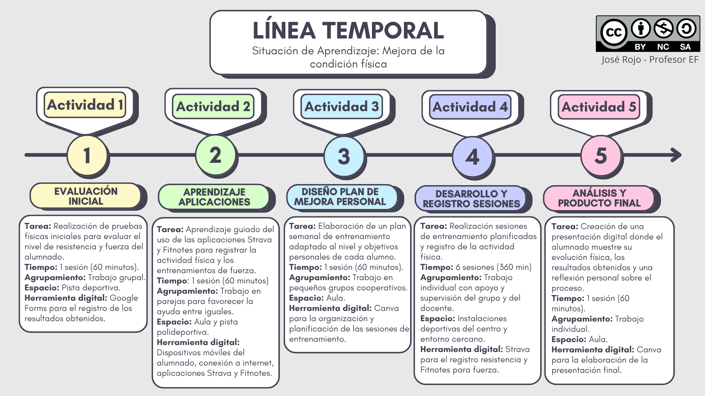
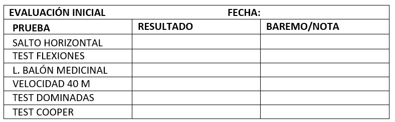

Línea temporal

A continuación, se detalla las diferentes sesiones y actividades a realizar:
- Sesión 1: en esta primera sesión vamos a realizar una serie de pruebas físicas en clase relacionadas con fuerza y resistencia y mediremos el nivel de partida de cada uno de vosotros/as.

- Sesión 2: esta sesión será teórico/práctica. Previamente en casa tendréis que haber visto los vídeos tutoriales de las aplicaciones Fitnotes y Strava. Posteriormente en clase resolveremos dudas y haremos algunas actividades de familiarización.
- Sesión 3: diseñaremos nuestro plan de entrenamiento personal para mejorar fuerza y resistencia. Recuerdo que se realizarán 6 sesiones para ello que serán las siguientes.
- Sesión 4, 5, 6, 7, 8 y 9: realizaremos los diferentes entrenamientos enfocados en fuerza y resistencia.
- Sesión 10: se realizará una presentación digital em Canva donde se muestren los resultados alcanzados y una reflexión sobre todo este proceso.